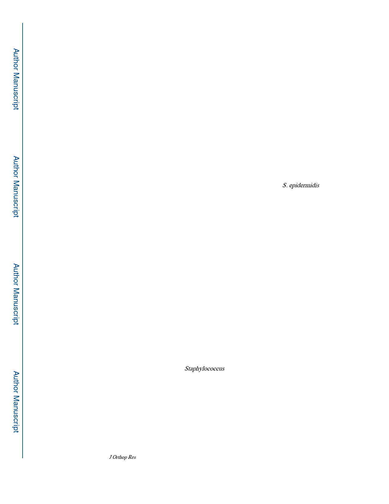

Tomizawa et al.
Page 4
Overview and sample size of experiments
To know the bacterial survival and bacterial burden in the tissue and on the implant, CFU
assay was used (n=10 in each group). To know the difference of host reaction against
different pathogens, histopathological and morphological (micro-computed tomography
(μCT)) experiments were performed, and to know the biofilm formation which possibly
related to the inhibition of osseous integration, implant was analyzed using scanning
electron microscopy (SEM) with quantitative measurement (n=5 in each group). To know
the host reaction in transcriptome, mRNA expression was evaluated using quantitative real-
time PCR (qPCR) (n=4 in each group). For above mentioned experiments, sample size was
determined according to the previous experiments 21,24–27. Finally and most importantly,
actual implant loosening was evaluated using biomechanical pushout test. The sample size
of was estimated by preliminary experiment in rat (unpublished data). According to the data,
to obtain 10 N difference, with standard deviation of 7 N, the calculated sample size was n =
8 under the condition of type I error was 0.05 and type II error was 0.80, then two extras
were added and n = 10 in each group was determined.
All experiments were planned using 14 days samples. To confirm that all S. epidermidis
samples established infection in earlier time point, 7 days experiments were added in CFU
assay, and to confirm that small amount of S. epidermidis biofilm was at plateau and mature
at 14 days, 42 days experiments were added, to deny the further growth of the biofilm. 21
The chart of the overview and sample size was showed in Fig. 1.
Ex vivo analysis
Bacterial survival in the tissue and on the implant using CFU analysis, as previously
described. 21,24 Briefly, after euthanizing, implants were removed from tibiae gently using
sterile forceps and the bone with surrounding soft tissue was weighed, minced and
homogenized in PBS, and implant was sonicated and vortexed in PBS, then spread on TSB
agar plate. CFU at 24 hours was calculated. To ensure if there were small colony variants,
the cultures continued until day 14.
For image analyses, tibiae were harvested and fixed in 4% paraformaldehyde, then analyzed
by high-resolution μCT (VivaCT 40; Scanco Medical AG, Basserdorf, Switzerland) to
render three-dimensional images of the diaphysis as we have previously described. The
maximal osteolytic area of medial and lateral cortex was measured for each specimen.
After μCT analysis, the tibiae were decalcified in EDTA and stained with alcian blue
hematoxylin/orange G (ABH/OG) and Brown and Brenn to evaluate morphology, gram
positive bacteria, and formation of Staphylococcus abscess communities (SAC), or with
tartrate-resistant acid phosphatase (TRAP) to evaluate osteoclast as previously described.24
After the tibiae and fixed in 2.5% glutaraldehyde and 4% paraformaldehyde overnight, and
then decalcified in 14% EDTA for 3 to 4 days, stainless steel implants were gently removed.
The implants were post-fixed for 30 minutes in 1.0% osmium tetroxide in 0.1M Millonig’s
phosphate buffer, rinsed in distilled water, dehydrated through a graded series of ethanol to
100%, and sputter coated with gold for photography using a Zeiss Auriga Field Emission
SEM. To measure area of the biofilm, pictures of the 1 mm2 region of interest were cropped
J Orthop Res. Author manuscript; available in PMC 2021 April 01.